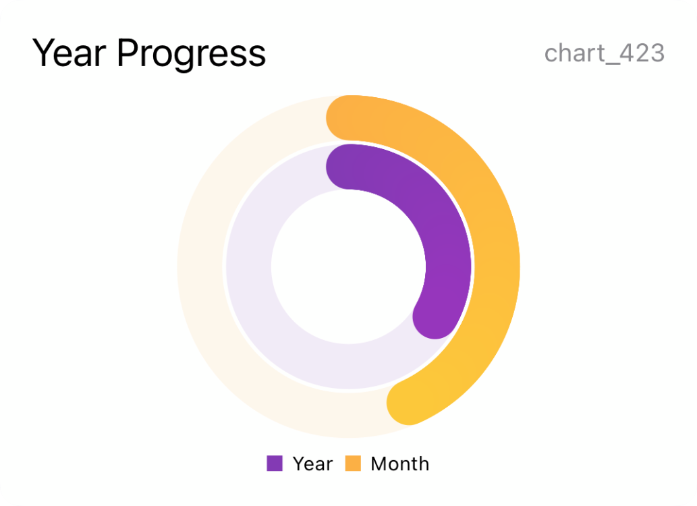
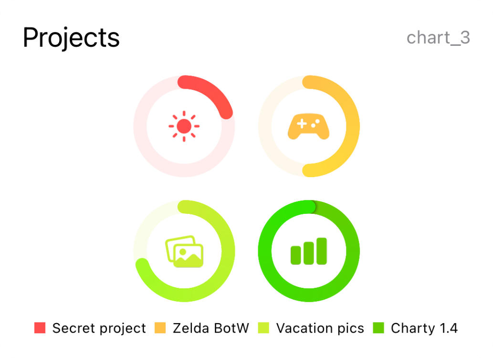
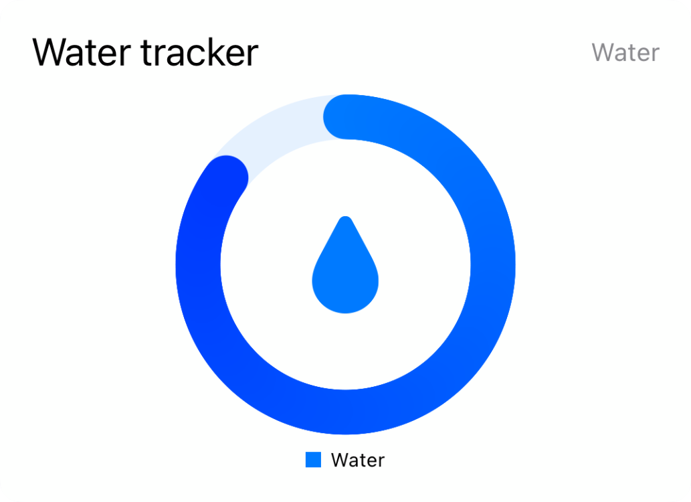
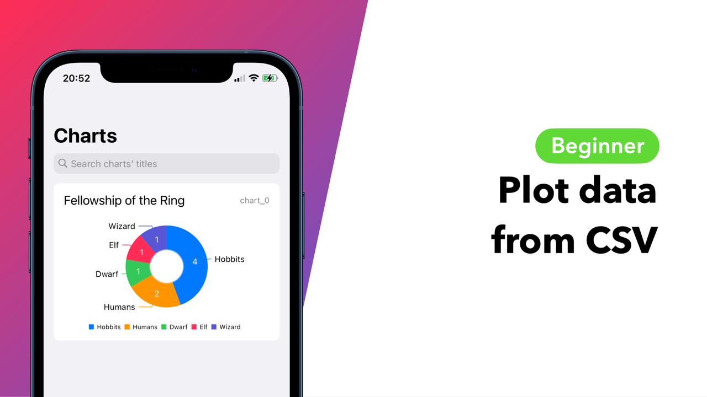
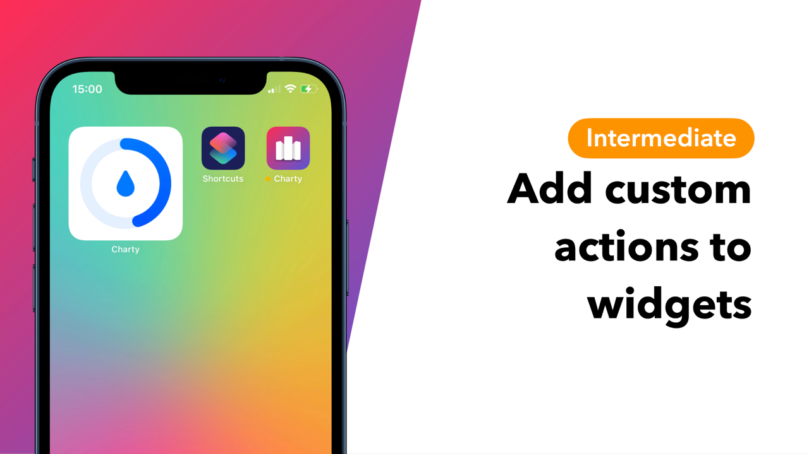
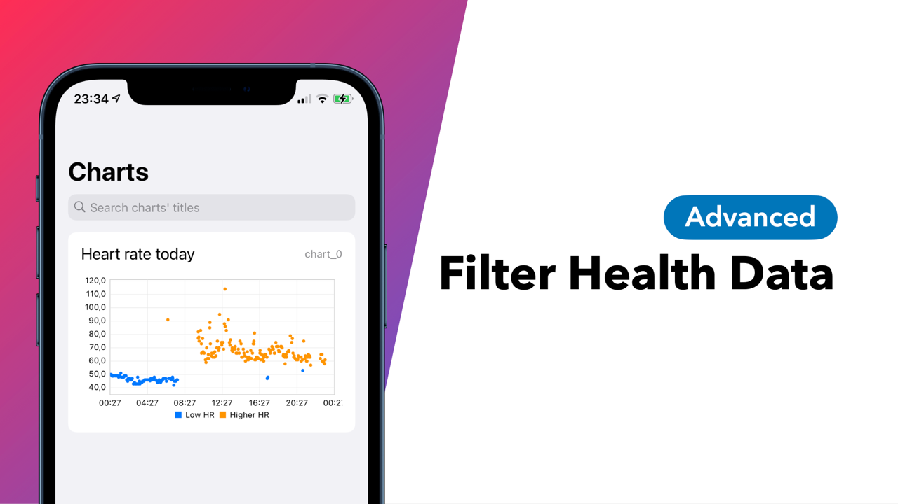
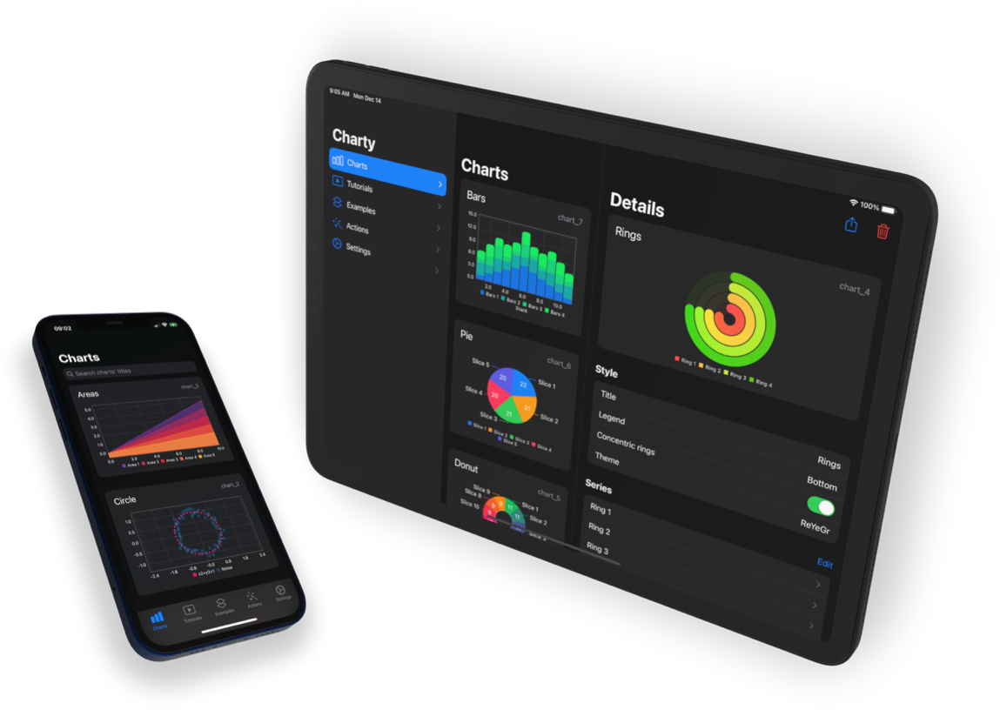
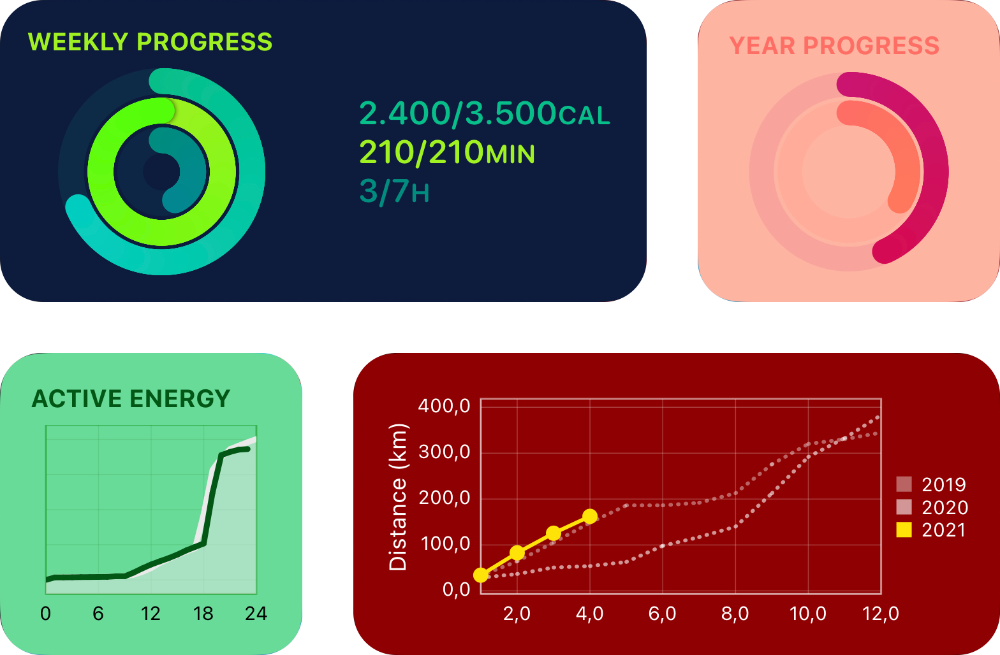
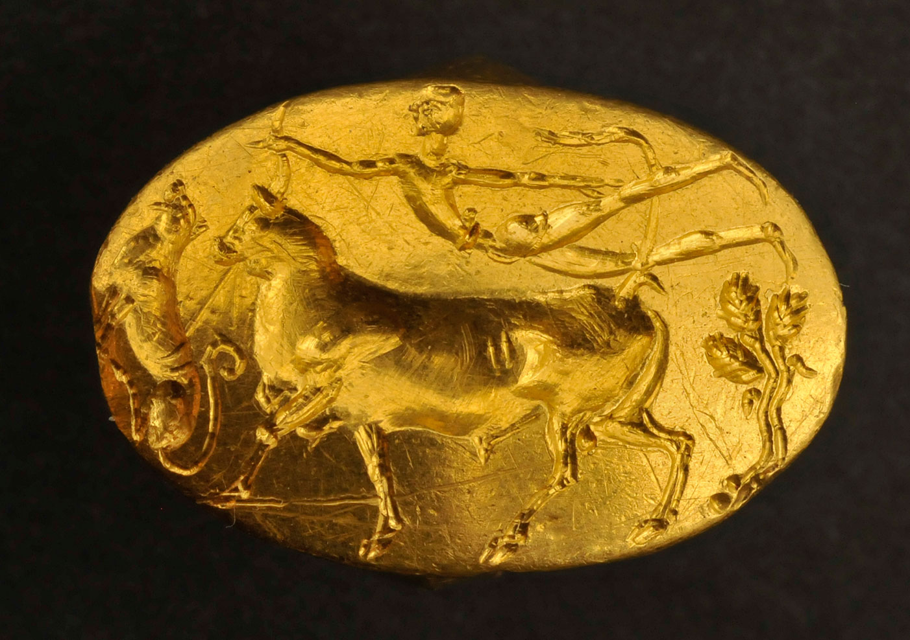

This is Charty's fourth major update!
Put a ring on it!
An entirely new series type has been added to Charty: Rings! This new series type is extremely useful to track progress accross multiple goals.
Everthing works exactly as before: create a chart with the New Chart action, then add a ring series using the Add Series To Chart. These charts can be shown as concentric rings or as a grid, and the second option offers extra customization showing symbols inside the rings.



Here are four bonus examples to try the new ring charts!
- Water tracker: this is a mini-shortcut-app to log and track water intake throughout the day;
- Sleep last night: this shortcut reads sleep data from Health and creates a ring chart showing how much you've slept compared to your goal;
- Track OmniFocus project: this shortcut asks you to pick an OmniFocus project and shows you a ring chart of tasks completed vs remaining;
- Weekly goal: this one uses Toolbox Pro's Get activity action to show weekly instead of daily apple watch rings.
Learn by watching
Charty now comes packed with 11 new video tutorials. Each of which will guide you through different aspects of creating powerful shortcuts to visualize data that's already available in your phone, or using data you can download from the internet.
These tutorials are presented based on the expertise required to understand them, from beginner to advanced level.

Beginner
- Plot data from Health
- Plot data from apps
- Show charts in notifications
- Automate your shortcuts
- Plot data from CSV

Intermediate
- Build a Water Tracker with Charty
- Add charts to your homescreen
- Create charts from Google Sheets
- Add custom actions to widgets

Advanced
- Filter Health data
- Track OmniFocus projects
A fresh UI

The app's user interface has been rethought making it easier to get to all the sections. On small screens, Charty now has a tab bar and a new three column layout on larger screens.
Charts, tutorials, examples, actions' descriptions and settings are now just a single tap away.
Improved widgets

The widgets' are a lot more customizable now! You can change their background to any color you'd like! Rather have them in dark mode all day? Done, you can now set the appearance of your widgets to force them into light or dark mode independently from system settings.
Also, you can now make tapping on your widgets do different things other than opening Charty. You can set it to directly run a shortcut or a given url-scheme. Have a widget showing progress on a specific project? Set it to open the app you're using to track it!
Extra actions
It wouldn't be a Charty update without new actions, so here they are! Use the new Style Ring Series action to modify the color, unit or symbol of your rings, and use Delete Series whenever you want to remove an old series from a chart.
The codename
Charty 1.4 is codenamed Theseus!
According to legend, Theseus had an argument with Minos, king of Crete, over his parentage. Theseus boasted his parentage by Poseidon to Minos, who was son of Zeus and didn't believe the guy (if you've played Hades, you might have an idea why).

Minos decided to try Theseus to check if he was indeed son of the king the seas and threw a ring from his ship and dared him to fetch it. Theseus jumped out the ship and was carried by fishes to the palace of Amphitrite, Poseidon's wife. She handed him the ring, and even gifted him a jeweled crown!
As always, thanks for getting all the way down here! You can keep following Charty's development over at Twitter!